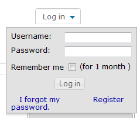

How to register for the Wiki
Hover over the Log in dropdown at the top right of the page, then click on Register. The picture below shows how it will look after it drops down.
Logging in to the wiki allows you to add Tags and Comments to pages. If you are a registered beta tester, logging in allows you to see beta content.